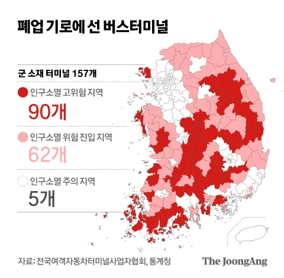
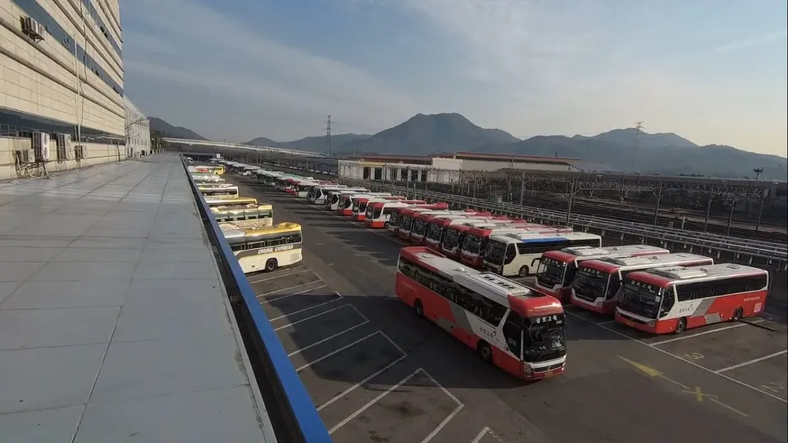

시외버스 터미널
자가용 없는 사람, ktx나 itx 열차역이 지나지 않는 지역
진짜로 한국에서 극심한 소외지역이 생겨날 지경이라고


시외버스 터미널
자가용 없는 사람, ktx나 itx 열차역이 지나지 않는 지역
진짜로 한국에서 극심한 소외지역이 생겨날 지경이라고
그 근방도시까지는 열차타고 가서 거기서 버스를 타던 택시를 타던하지 장거리 버스는 안 탐
어디 지역 사는진 몰겠는데 기차가 커버치는 곳이 생각보다 좁음.
강원도말고는 인근까진 커버되던데 일단 어디 사는진 알겠다
알면 다시 생각해보도록
남일이라고 막말하네 막말로 운송업은 인류역사이래로 계속되었던건데 훙 없어지노 이지랄 ㅋㅋ
이제 미국처럼 존나 무서운 시골 분위기 풍기겠지
강원도 흰 곳 두개는 원주 춘천인가? 생각해보니 부대복귀할때 유일하게 눈에 들어오던곳들이네
자율주행이 해결해 줄것이양
이제 자차 개념도 없어지구
자율주행이 해주겠지 뭐
청계천 자율주행 다니는거보면 결국 대체될것 같긴하다
지하철 하나 없는 울산광역시가 연간 버스적자가 1500억인데다가 아직 수동 미션에 CNG가스넣고 다니는판국에 10년~20년안에?ㅋㅋㅋㅋㅋㅋㅋ 관광이나 시외는 아직도 디젤버스가 판을 치는데? 소프트웨어 하나 완성했다고 그렇게 빨리 페러다임이 바뀔거같음? 도로설비부터 버스도 전기차로 다 바껴야되는데? 자율주행법 마련도 해야되고 버스 업계 전부 시에서 공영제로 돌려서 세금으로 굴리는거 아니고서야 22세기나 들어서야 상용화될거다. 운수회사는 지금도 적자나는데 장비 새로 마련할 돈은 뭐 조상님이 대주나 ㅋㅋ 존나 쉽게 생각하네 다들
울산 사시나요
울산에 뭐가 맛있노
그래서 필요한게 자율주행자동차인데
자율주행자동차들어오면 할크크들 일자리가 날라가버림..
소멸지역부터 면허사들여서 현기차가 개빡세게 자율주행돌리면좋겠다.
자차 없으면 택시 시대가 오나
수도권 인근에 신도시 도배를 하니까 지방 인구수 빨아들이고 노후된 인프라는 ㅈ망하고 있고.
이젠 수도권 구도심 인구수를 신축 신도시가 빨아들이고 있고.
근데 자율주행 상용화돼도 무적의 논리
'남는게 없는데 왜함?' 파훼 못할듯. 가는 사람이 없어서 노선 없어지는건 똑같은데
자료 만든새끼가 수도권사는놈이란건 알겠다
자율주행이 교통복지 해결할거라고봄
기차 안 다니는 곳 천지삐까리이